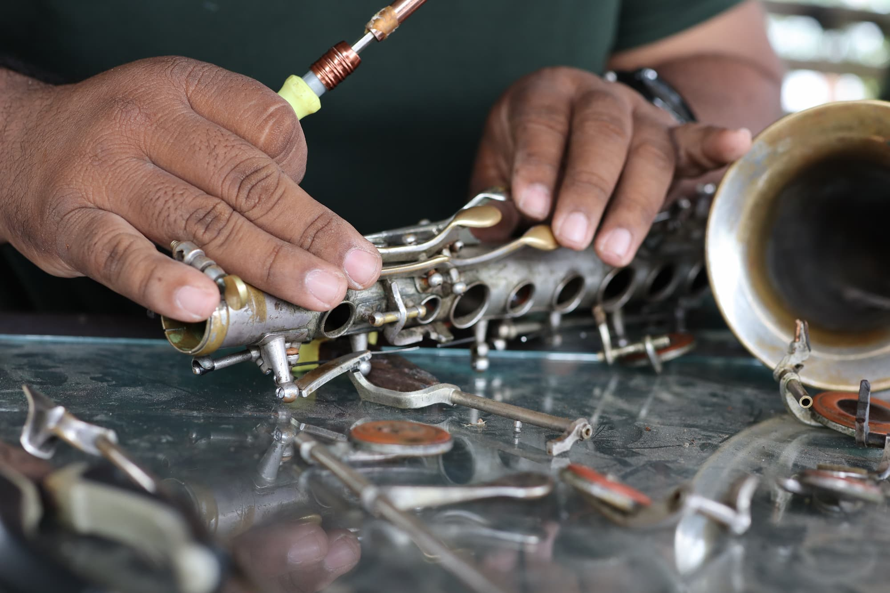
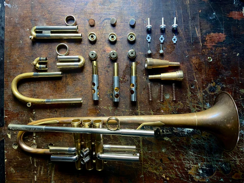
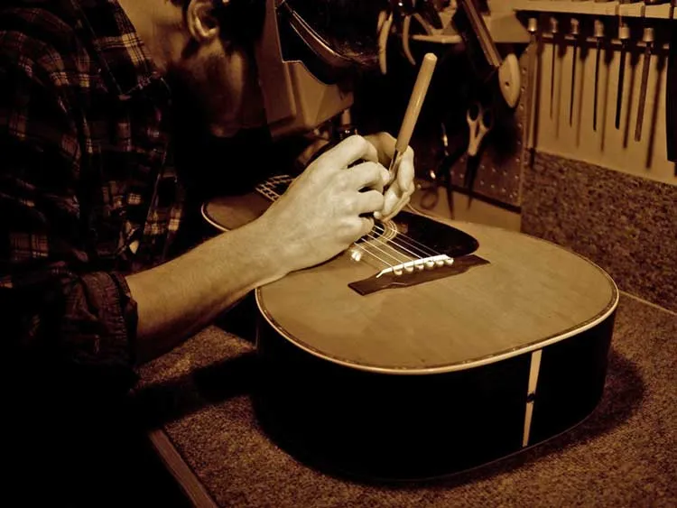
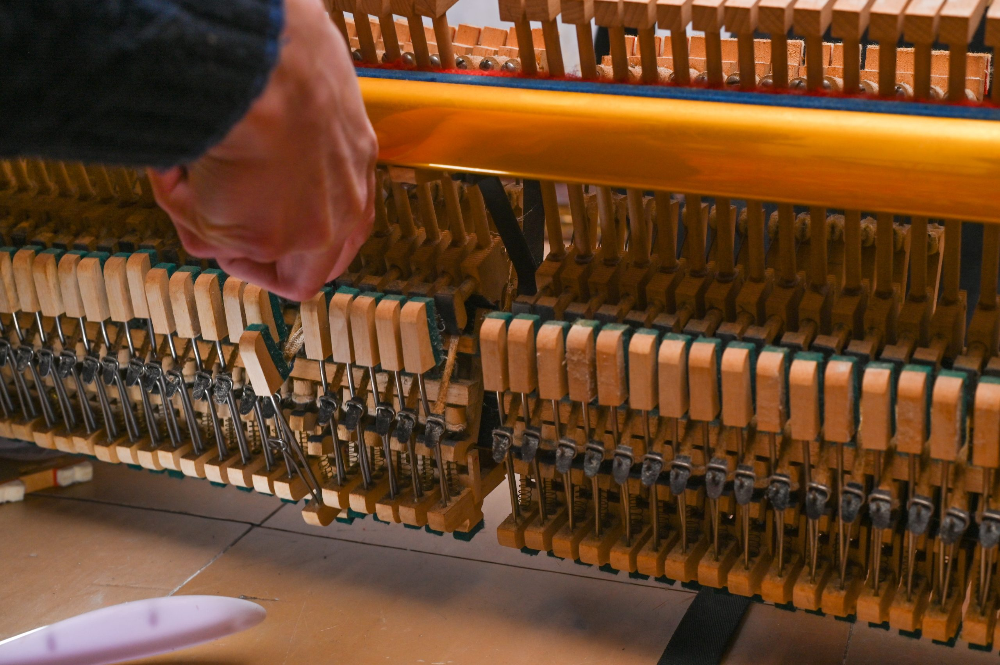
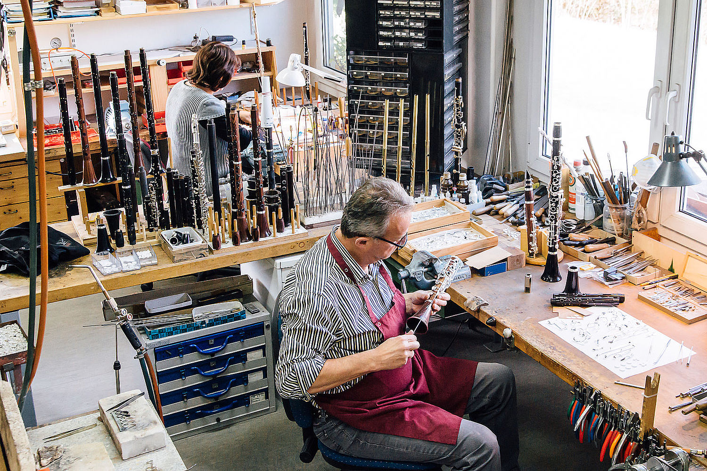
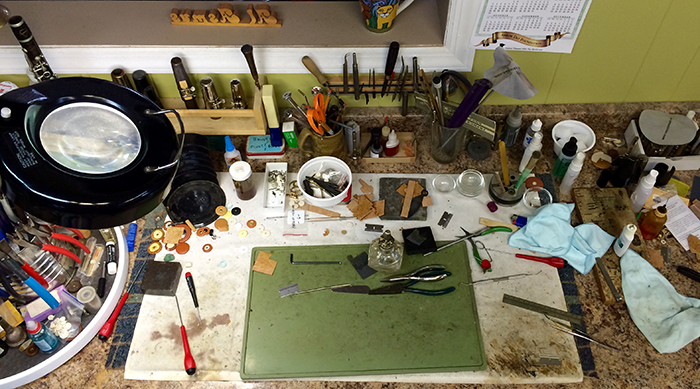

Naši projekti
Kroz naše mnoge godine postojanja, restaurirali smo mnoge instrumente različitih veličina, tipova i stanja. Istražite našu svakodnevnicu i osjetite duh koji vraćamo zaboravljenim instrumentima.





